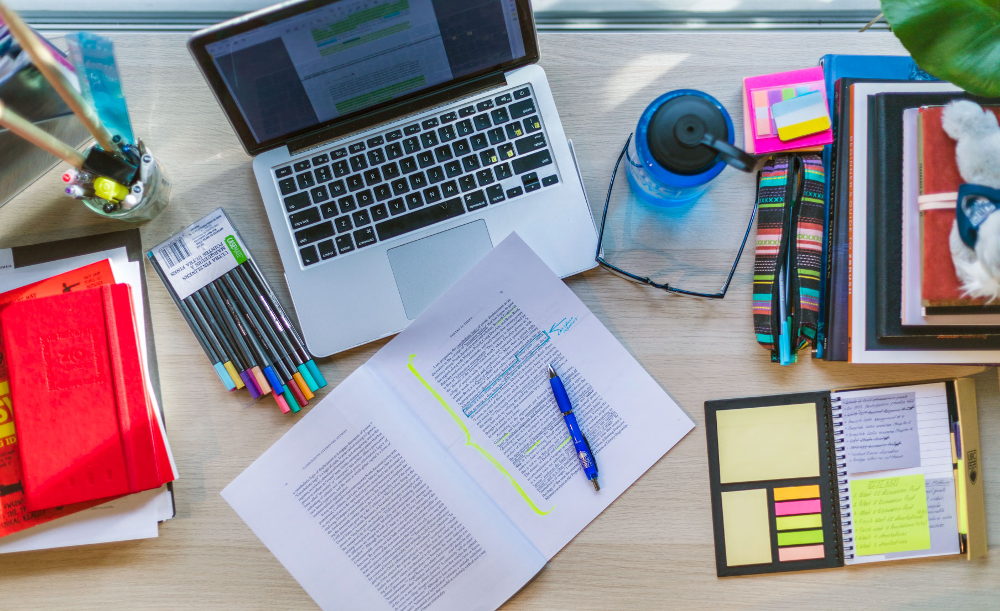

Tips and tricks for studying
.jpg)
- 1. Create a study schedule:
- 2. Take Breaks:
- 3. Don't be affraid to ask for help:
- 4. Break up the information:
- 5. Create flashcards:
- 6. Eat and sleep well before your test:
This will help manage your time and stay organized. It can also help you achieve your goals.
Taking breaks allows your brain to restore itself.In addition,it increases your energy, productivity and concentration. Lastly, it prevents procrastination.
There is no shame in asking for help or not understanding a concept. Studying in groups can help with this problem since you can tutor and help each other out.
Our brains have an easier time processing small amounts of information vs larger ones.Studying the topic in sections helps with memorising it.
It is important not to just reread the information but to do practice questions to see if you can actually apply it.
Part of getting good grades is making sure your physical and mental health is well taken care of. Getting a good night sleep and eating well before a test makes sure you are energized and can concentrate.
| Home Page  |
How early should you start studying? |
How to balance studying and personal life?.jpg) |